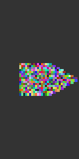

Drawings as image matrices
Images as matrices
While drawing a PNG drawing, you can at any time copy the current graphics in a drawing as a matrix of colored pixels, using the image_as_matrix function.
With the @imagematrix macro, you can create a drawing in the usual way, and then return the result as a matrix of colored pixels.
This code draws a very small PNG image and also uses the image_as_matrix() function to stores the pixels in mat as a 25×25 reinterpret(ColorTypes.ARGB32, ::Matrix{UInt32}):.
using Luxor
Drawing(25, 25, :png)
origin()
background(randomhue()...)
sethue("red")
fontsize(20)
fontface("Georgia")
text("42", halign=:center, valign=:middle)
mat = image_as_matrix()
finish()
preview()
````
The next example draws an ampersand and then processes the
pixels further in Images.jl.
using Luxor, Colors, Images, ImageFiltering
m = @imagematrix begin background("black") sethue("white") fontface("Georgia") fontsize(180) text("&", halign=:center, valign=:middle) end 200 200
function convertmatrixtocolors(m) return convert.(Colors.RGBA, m) end
img = convertmatrixtocolors(m)
imfilter(img, Kernel.gaussian(10))

[`image_as_matrix`](@ref) returns a array of ARGB32
(AlphaRedGreenBlue) values. Each ARGB value encodes the Red,
Green, Blue, and Alpha 8-bit values of a pixel into a single 32
bit integer.
You can display the matrix using, for example, Images.jl.
using Luxor, Images
in Luxor
Drawing(250, 250, :png) origin() background(randomhue()...) sethue("red") fontsize(200) fontface("Georgia") text("42", halign=:center, valign=:middle) mat = imageasmatrix() finish()
in Images
img = RGB.(mat)
img = Gray.(mat) # for greyscale
imfilter(img, Kernel.gaussian(10))
In Luxor:

In Images:

The next example makes two drawings. The first draws a red rectangle, then copies the
drawing in its current state into a matrix called `mat1`. Next it adds a blue
triangle, and copies the updated drawing state into `mat2`.
In the second drawing, values from these two matrices are
tested, and table cells are randomly colored depending on
the corresponding values ... this is a primitive Boolean
operation.
@example using Luxor, Colors, Random # hide Random.seed!(42) # hide
first drawing
Drawing(40, 40, :png) origin() background("black") sethue("red") box(Point(0, 0), 40, 15, :fill) mat1 = imageasmatrix() sethue("blue") setline(10) setopacity(0.6) ngon(Point(0, 0), 10, 3, 0, :stroke) mat2 = imageasmatrix() finish()
second drawing
Drawing(400, 400, "../assets/figures/image-drawings.svg") background("grey20") origin() t = Table(40, 40, 4, 4) sethue("white") rc = CartesianIndices(mat1) for i in rc r, c = Tuple(i) pixel1 = convert(Colors.RGBA, mat1[r, c]) pixel2 = convert(Colors.RGBA, mat2[r, c]) if red(pixel1) > .5 && blue(pixel2) > .5 randomhue() box(t, r, c, :fillstroke) end end finish() # hide nothing # hide ```
The first image (enlarged) shows the mat1 matrix as red, mat2 as blue.

In the second drawing, a table with 1600 squares is colored according to the values in the matrices.

(You can use collect to gather the re-interpreted values together.)